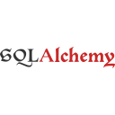

Minha Stack
Linguagens
Frontend
Banco de Dados

Pipeline ETL monitorando 33 praças pecuárias diariamente. ERP em produção com rastreamento por animal e fluxo de caixa em tempo real. Do algoritmo ao deploy.
Planilhas desconexas custavam horas de análise para produtores que tomam decisões sobre animais que valem milhares de reais. ERP web em produção: GMD, fluxo de caixa e valuation calculados por Views SQL com CTEs e window functions, sem ORM, sem latência.
Cotações de boi gordo e novilha em 33 praças brasileiras — sem API pública, sem formato padronizado. Pipeline ETL de custo zero: GitHub Actions como cron job, Git como banco histórico imutável, cada commit um snapshot auditável. Alimenta o ERP em tempo real.
A maioria dos currículos é rejeitada por filtros ATS antes de chegar em humanos. CLI que usa o Google Gemini para reescrever o currículo no vocabulário exato da vaga em menos de 30 segundos — com cache MD5, modo batch e resiliência a rate limits. O currículo que você está avaliando passou pelo Polymorph.
Apps de finanças exigem formulários quando tudo que o usuário quer é registrar um gasto rápido. O Plin lê linguagem natural — "gastei 45 reais no mercado" — e registra, categoriza e confirma via spaCy NLP, sem nenhum comando formatado. Roda em self-hosting via Docker em homelab próprio.

Cresci no contexto do agronegócio e aprendi que dado sem contexto de negócio não vira decisão. Isso moldou como eu penso software: parto sempre do problema real para chegar na solução técnica, nunca o contrário.
Construí pipelines ETL, ERPs zootécnicos, bots com NLP e CLIs com LLM — sempre conectando a solução técnica a um problema real do agronegócio. Estudo Engenharia de Software na UFAL com foco em sistemas escaláveis e tenho inglês fluente (Cambridge FCE) para consumir o que há de melhor na área.
Vice-campeão nacional e estadual no Hackathon SEB, com dois MVPs idealizados em menos de 48h cada, antes mesmo de entrar na faculdade. Pesquisador no Laboratório TOCA da UFAL, desenvolvendo um app de libras para crianças surdas. Prefiro aprender resolvendo problemas reais.
Vice-campeão nas etapas Estadual e Nacional do Hackathon SEB 22/23, antes de entrar na faculdade. Em menos de 48h por edição, participei da ideação e estruturação de dois MVPs apresentados para banca. Aprendi que clareza de raciocínio e visão de produto valem tanto quanto execução técnica.
Coordenei uma equipe de monitores e gerenciei a logística de múltiplos workshops simultâneos no maior congresso de computação do Brasil, o CSBC, com milhares de participantes por edição.
Desenvolvo o Loodus no Laboratório de Tecnologias para Acessibilidade (TOCA/UFAL): um app gamificado que ensina Libras para crianças surdas através de minijogos interativos. Pesquisa aplicada com impacto direto em inclusão educacional e acessibilidade.
First Certificate in English pela Cambridge Assessment English. Leitura de documentações nativas, consumo de conteúdo técnico global e comunicação clara com equipes internacionais sem depender de tradução.
30 horas pela Udemy. Modelagem de dados, queries complexas, Views e otimização de índices, base da arquitetura Database-First que aplico no Sistema de Gestão de Gado.
10 horas pela OxeTech. Frameworks ágeis para entrega contínua de valor e prototipação rápida, habilidades que testei sob pressão real nas duas experiências em Hackathons.
Disponível para oportunidades em backend Python — especialmente onde dados do agronegócio precisam de software.
Respondo em até 24h. Inglês fluente para equipes internacionais.